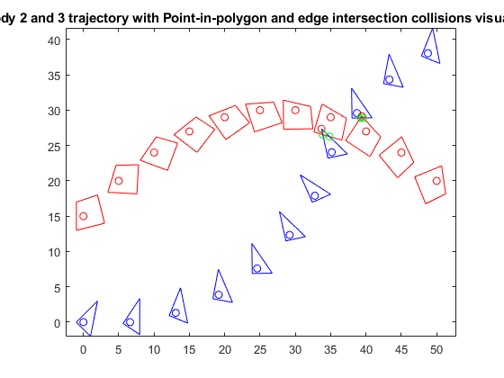

clc,clear,close all
all = [ 0 0 15.0000 0 0 0 0 ;
1.0000 5.0000 20.0000 -0.3000 6.6000 0 0.2000 ;
2.0000 10.0000 24.0000 -0.6000 13.0684 1.3112 0.4000 ;
3.0000 15.0000 27.0000 -0.9000 19.1474 3.8814 0.6000 ;
4.0000 20.0000 29.0000 -1.2000 24.5947 7.6080 0.8000 ;
5.0000 25.0000 30.0000 -1.5000 29.1929 12.3426 1.0000 ;
6.0000 30.0000 30.0000 -1.8000 32.7589 17.8963 1.2000 ;
7.0000 35.0000 29.0000 -2.1000 35.1505 24.0477 1.0000 ;
8.0000 40.0000 27.0000 -2.4000 38.7165 29.6014 0.8000 ;
9.0000 45.0000 24.0000 -2.7000 43.3147 34.3360 0.6000 ;
10.0000 50.0000 20.0000 -3.0000 48.7620 38.0626 0.4000 ];
time = all(:,1)';
r2_all = all(:,2:3)';
phi2_all = all(:,4)';
r3_all = all(:,5:6)';
phi3_all = all(:,7)';
ntime = length( time );
s2p_poly = [ 2 3 -1 -1 2 ;
3 -1 -2 2 3 ];
s3p_poly = [ 2 1 -1 2 ;
3 -2 0 3 ];
rho2 = max( sqrt( diag( s2p_poly'*s2p_poly ) ) );
[ nr, n2 ] = size( s2p_poly );
rho3 = max( sqrt( diag( s3p_poly'*s3p_poly ) ) );
[ nr, n3 ] = size( s3p_poly );
BC_collisions = zeros(1,ntime);
PiP_2in3 = zeros(1,ntime);
PiP_3in2 = zeros(1,ntime);
figure( 1 )
clf
for itime = 1 : ntime
t = time(itime);
r2 = r2_all(:,itime);
r3 = r3_all(:,itime);
dist_r3r2 = r3 - r2;
dist_r3r2 = sqrt(dist_r3r2'*dist_r3r2);
if dist_r3r2 < (rho2 + rho3)
BC_collisions(itime) = 1;
end
phi2 = phi2_all(itime);
phi3 = phi3_all(itime);
A2 = [ cos(phi2) -sin(phi2) ;
sin(phi2) cos(phi2) ];
A3 = [ cos(phi3) -sin(phi3) ;
sin(phi3) cos(phi3) ];
r2_poly = r2*ones(1,n2) + A2*s2p_poly;
r3_poly = r3*ones(1,n3) + A3*s3p_poly;
IN_2in3 = inpolygon(r2_poly(1,1:end-1),r2_poly(2,1:end-1),r3_poly(1,1:end-1),r3_poly(2,1:end-1));
verticies_2in3 = find(IN_2in3==1);
if ~isempty(verticies_2in3)
fprintf('Body 2 vertices shown below are in body 3 at time=%i\n',t)
verticies_2in3
end
if any(IN_2in3==1)
PiP_2in3(itime) = 1;
end
IN_3in2 = inpolygon(r3_poly(1,1:end-1),r3_poly(2,1:end-1),r2_poly(1,1:end-1),r2_poly(2,1:end-1));
verticies_3in2 = find(IN_3in2==1);
if ~isempty(verticies_3in2)
fprintf('Body 3 vertices shown below are in body 2 at time=%i\n',t)
verticies_3in2
end
if any(IN_3in2==1)
PiP_3in2(itime) = 1;
end
[XI,YI,II] = polyxpoly(r2_poly(1,:),r2_poly(2,:),r3_poly(1,:),r3_poly(2,:));
if ~isempty(XI)
fprintf('Edge intersections at time=%i\n',t)
disp('xi yi edge2 edge3')
for i=1:length(XI)
fprintf('%f %f %i %i\n',XI(i),YI(i),II(i,1),II(i,2))
end
disp(' ')
end
plot( r2(1),r2(2),'ro',r3(1),r3(2),'bo' )
axis equal
hold on
plot( r2_poly(1,:), r2_poly(2,:), 'r',r3_poly(1,:),r3_poly(2,:),'b' )
if ~isempty(verticies_2in3)
plot(r2_poly(1,verticies_2in3),r2_poly(2,verticies_2in3),'ro')
end
if ~isempty(verticies_3in2)
plot(r3_poly(1,verticies_3in2),r3_poly(2,verticies_3in2),'ro')
end
plot(XI,YI,'go')
end
title('Body 2 and 3 trajectory with Point-in-polygon and edge intersection collisions visualized')
BC_collision_times = find(BC_collisions==1) - 1;
fprintf('Problem 3:\nObjects are candidates for collision as determined by the bounding circles test at times shown in the array below\n')
BC_collision_times
fprintf('Problem 4:\nObjects are candidates for collision as determined by the point-in-polygon for body 2 in body 3 test at times shown in the array below\n')
PiP_2in3_times = find(PiP_2in3==1)-1
fprintf('Problem 4:\nObjects are candidates for collision as determined by the point-in-polygon for body 3 in body 2 test at times shown in the array below\n')
PiP_3in2_times = find(PiP_3in2==1)-1
fprintf('Problem 5: edge intersections can be found above in output')
Body 3 vertices shown below are in body 2 at time=7
verticies_3in2 =
1
Edge intersections at time=7
xi yi edge2 edge3
34.824046 26.271998 1 1
33.882006 26.547201 1 3
Body 2 vertices shown below are in body 3 at time=8
verticies_2in3 =
3
Edge intersections at time=8
xi yi edge2 edge3
39.222054 28.901600 2 2
39.609058 28.907252 3 2
Problem 3:
Objects are candidates for collision as determined by the bounding circles test at times shown in the array below
BC_collision_times =
7 8
Problem 4:
Objects are candidates for collision as determined by the point-in-polygon for body 2 in body 3 test at times shown in the array below
PiP_2in3_times =
8
Problem 4:
Objects are candidates for collision as determined by the point-in-polygon for body 3 in body 2 test at times shown in the array below
PiP_3in2_times =
7
Problem 5: edge intersections can be found above in output